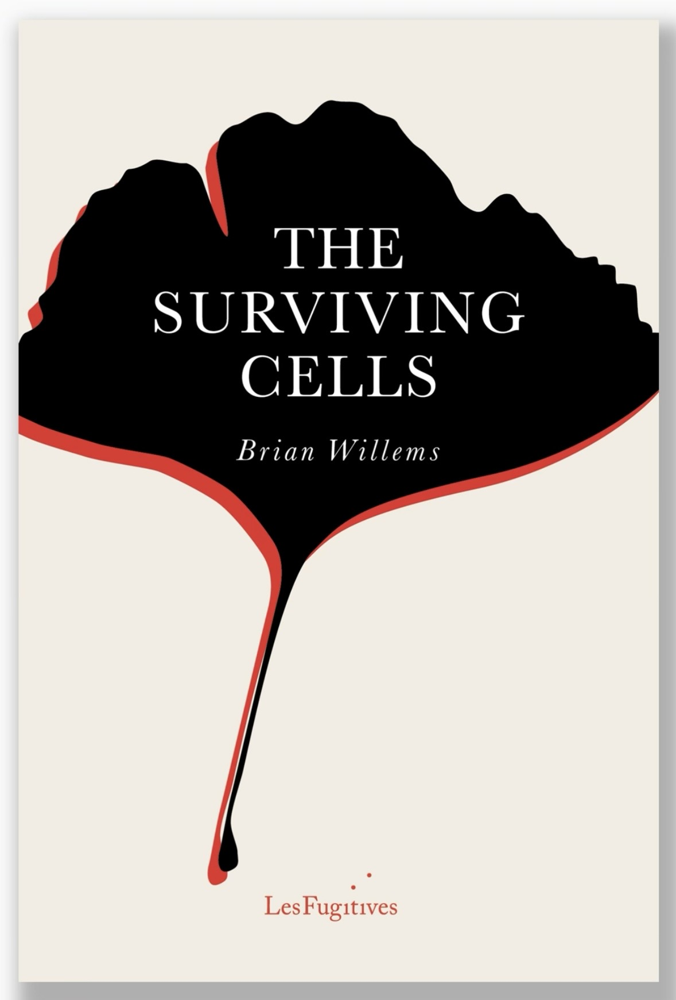

Brian Willems teaches literature at the Faculty of Humanities and Social Sciences, University of Split, Croatia, and is director of its Studia Mediterranea centre. His poetry and prose have appeared in The Antioch Review, Poetry Salzburg Review, Things Magazine, Prague Literary Review and elsewhere. He is the author of several academic books, most recently Anger and Change in Korean American Literature (2025) and Sham Ruins: A User's Guide (2022), and is co-editor, with Nicol Barria-Asenjo and Slavoj Žižek, of Global Manifestos for the 21st Century, with a foreword by Yanis Varoufakis (2023). He translates from Croatian into English, and received a grant from the European Prize for Literature for his translation of Luka Bekavac's Gallery of Fine Arts in Osijek: Studies, Ruins. He has been a guest lecturer in the UK, USA, the Middle East, and continental Europe.
A list of his academic publications can be found here
The Surviving Cells is a novel forthcoming October 1st, 2026 from Les Fugitives. Now available for pre-order.
The book will be launched in conversation with Hannah Hutchings-Georgiou at Burley Fisher Books in London on October 14th. Details and tickets available here.

Present-day Minneapolis. Doctor Ana Jovanovic, oncologist, goes against the advice of her hospital's tumour board and schedules her patient Jonathan for exploratory surgery.
When a tragic event sends the doctor’s life into a tailspin, she takes a sudden sabbatical.
Now sharply aware of her own mortality, the doctor is confronted with decisions about quality of life and quality of death.